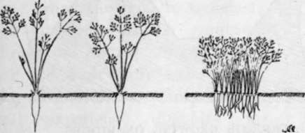
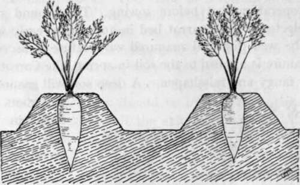
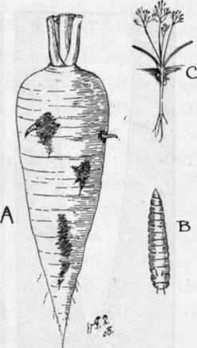
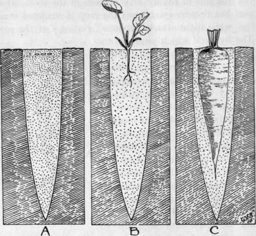

Carrots
Description
This section is from the book "School Gardening", by W. Francis Rankine. Also available from Amazon: School Gardening.
Carrots
Carrots demand, as in the case of Beet, a thoroughly worked soil, and it is not sufficient to perform this operation just before sowing. The ground should be selected for the carrot bed in autumn or early winter and be well dug and manured with refuse if necessary. If manure is applied to the soil in spring, the Carrots will grow fangy and misshapen. A deep soil will ensure that the roots have sufficient room for downward growth.
Carrots may be sown from March to July, the seeds being dropped in clusters of three or four at intervals of six to twelve inches according to the variety ; the drills must be one inch deep, and twelve inches asunder. Subsequently the seedlings should be thinned out tosingle plants. This thinning is of the greatest importance; if it is neglected, small, ill-shapen roots will be the result. If small Carrots are required for soups and flavouring purposes, the sowing should be continuous in the drill and the thinning should proceed in two stages, viz., at the first thinning the plants may be left three inches apart and every other one is subsequently pulled for culinary purposes. However, there is no gain in thick sowing or crowded growing.
Fig. 31. the value of thinning.
On the left are two Carrots which have grown excellently since they have had ample space ; on the right the Carrots could not develop owing to packing in the row.
The roots are pulled in autumn, the leaves should be removed and the crop stored similarly to Beet.
Fig. 32. carrots growing on ridges.
The Best Varieties :-The selection of Carrots depends on the character of the soil. For light deep soils, New Red Intermediate is recommended, and for heavy soils Market Favourite and Model are good. Pests. The Carrot crop is often attacked by Wire-worm and the Carrot Fly. The Wireworm is described in Chapter X
The Carrot Fly
The presence of this pest is indicated in its early stage of development by the colour of the leaves changing. If such an infested Carrot be pulled, the maggots of the fly may be seen in the root. If the pest has become established the crop is rendered worthless, while slight attacks produce " rusting " of the roots. The fly itself which produces the trouble may be found in spring ; it is a small two-winged insect about one-fifth of an inch in length. In May it proceeds to place its eggs on the carrot just below the soil surface, and when the maggots hatch they work downwards into the tender root. The ravages of this pest may be lessened by previously dressing the soil with gas-lime when the land is trenched. Sprayings of paraffin emulsion should be carried on, and if the soil be kept firm well up to the crowns of the plants the fly will experience difficulty in placing her eggs on the root.
Parsnips
This hardy root crop flourishes in a sound loam, and previous to sowing the soil should be most thoroughly cultivated ; no fresh manure must be used. As in the case of the Carrot bed the preliminary operations should be carried out in late autumn or early winter. It must be remembered that this crop in particular requires a great amount of root space, and every effort should be made to provide it. Extra large roots may be grown by boring large holes and filling them with friable compost. Two or three seeds are sown in such a station and the strongest plant is selected for future growth. Thus the shape of the root is determined by the hole previously made. This practice is of especial value in the case of heavy or strong soils, or where exhibition produce is being grown. In general culture, however, this practice is not necessary, and if the soil is moved previously to sowing to a depth of at least two feet, a successful crop should be the result.
Fig. 33. Carrot Fly.
(Psila rosae)
A.-Infested Carrot. B.- Enlarged drawing of maggot. C.-Eggs on young plant.
Fig. 34. how to grow exhibition carrots, beet, and parsnips.
A.-Hole made with crowbar and filled with compost ; three seeds are sown as indicated. B.-The strongest seedling is retained and the others rejected. C.-Root filling the prepared form.
Sowings may be commenced in February if the weather permits. Make drills one inch deep and fifteen inches apart, and in these drills sow the seed as advised for Beet. Subsequently the strongest plants are retained at twelve inches apart when the rows are thinned. By no means allow thick sowings. Parsnips can be lifted and stored similarly to Beet, but they are best drawn from the soil as required for use.
The Best Varieties :- For general garden culture grow Tender and True and Hollow Crown.
Pest.Parsnip Canker
This is a fungoid disease that works extensive damage among Parsnips. Infested soils should be dressed with gas-lime at the rate of two lbs. per square yard in autumn. The dressing should be thoroughly worked into the top layer of the soil, so that it may be brought as much as possible into contact with the spores.
Celery Fly
The Celery Fly may attack Parsnips, and the same procedure should be followed as recommended in Chapter XII.
Continue to:
- prev: Beet
- Table of Contents
- next: Turnips